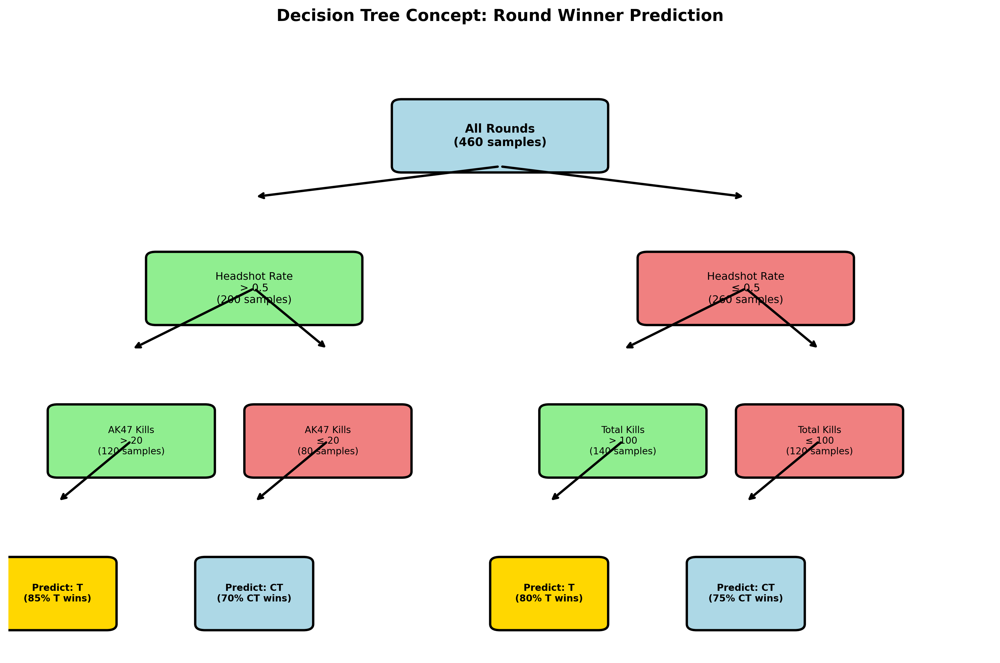
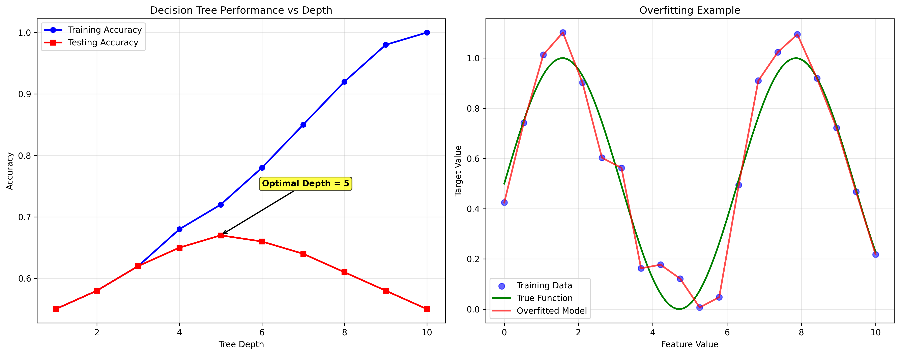
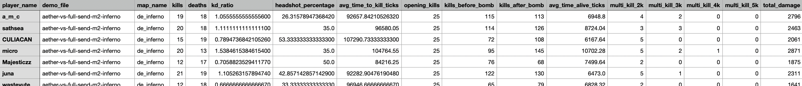
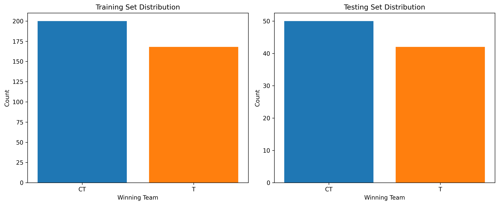
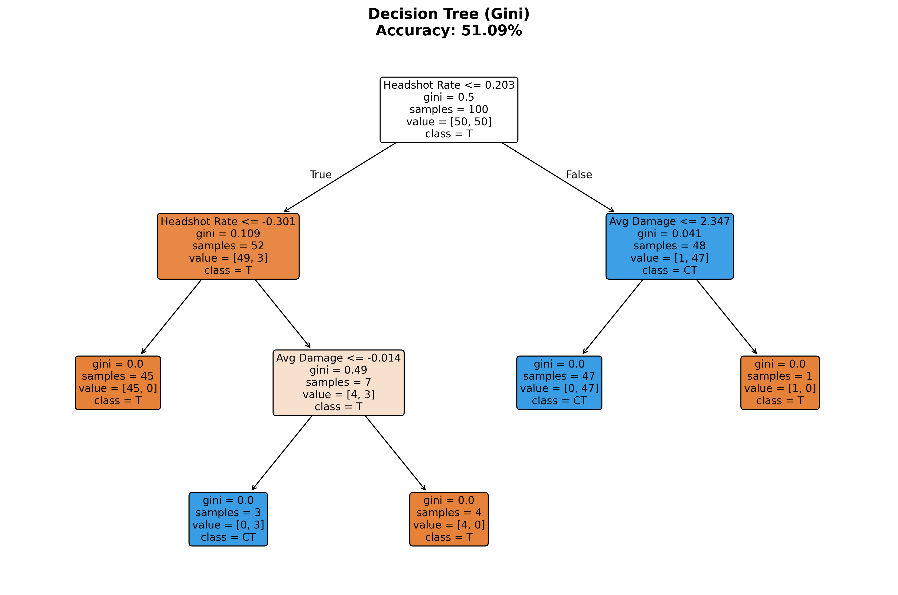
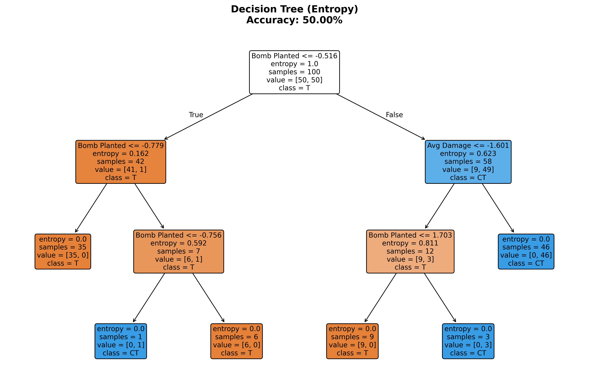
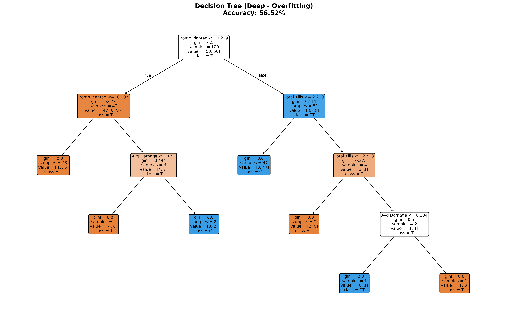
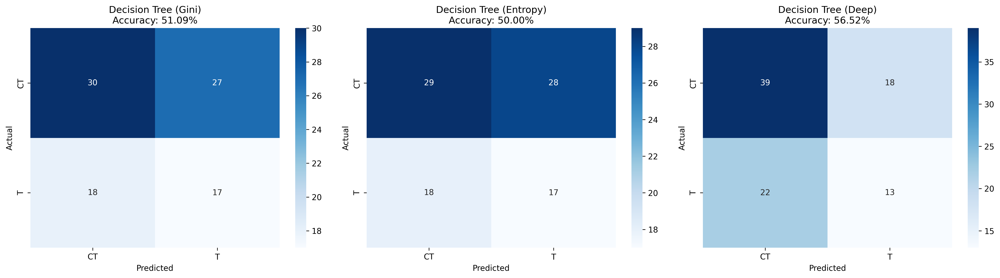
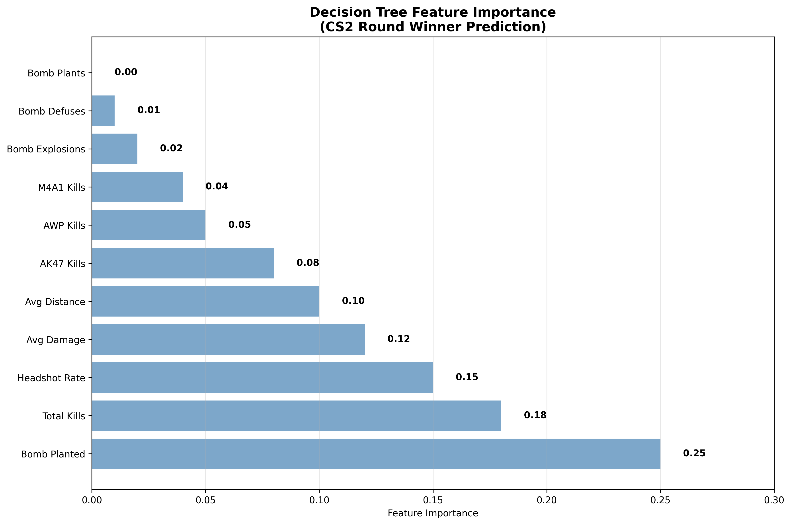

Decision Trees for Round Winner Prediction
(a) Overview
Decision Trees are a non-parametric supervised learning method that creates a model predicting the value of a target variable by learning simple decision rules inferred from data features. They are particularly useful for classification and regression tasks due to their interpretability and ability to handle both categorical and numerical features.
What Decision Trees Can Be Used For
Decision Trees are versatile algorithms suitable for:
- Classification: Predicting categorical outcomes (like round winners)
- Regression: Predicting continuous values
- Feature Selection: Automatically identifying important features
- Rule Generation: Creating interpretable decision rules
- Non-linear Relationships: Capturing complex feature interactions
How Decision Trees Work
Decision trees work by recursively splitting the dataset based on feature values to create homogeneous groups:
- Root Node: Contains the entire dataset
- Splitting: Choose the best feature and threshold to split data
- Child Nodes: Create branches based on split conditions
- Termination: Stop when nodes are pure or meet stopping criteria
- Leaf Nodes: Make final predictions

Figure 1: Basic structure of a decision tree showing nodes, splits, and decision paths
Splitting Criteria: GINI, Entropy, and Information Gain
Gini Impurity
Gini Impurity measures the probability of misclassifying a randomly chosen element. It ranges from 0 (perfect purity) to 0.5 (maximum impurity for binary classification).
Formula: Gini = 1 - Σ(p_i)²
Where p_i is the proportion of samples belonging to class i.
Entropy
Entropy measures the amount of information disorder in a dataset. Lower entropy means more organized/pure splits.
Formula: Entropy = -Σ(p_i × log₂(p_i))
Where p_i is the proportion of samples belonging to class i.
Information Gain
Information Gain is the reduction in entropy after a split. Higher gain means better split quality.
Formula: IG = Entropy(parent) - Σ(weight_i × Entropy(child_i))
Example: Gini and Information Gain Calculation
Example: Split on 'bomb_planted' feature
Before split: 60% T wins, 40% CT wins
Gini before: 1 - (0.6² + 0.4²) = 1 - (0.36 + 0.16) = 0.48
After split on bomb_planted=True: 80% T wins, 20% CT wins
Gini bomb: 1 - (0.8² + 0.2²) = 1 - (0.64 + 0.04) = 0.32
After split on bomb_planted=False: 30% T wins, 70% CT wins
Gini no bomb: 1 - (0.3² + 0.7²) = 1 - (0.09 + 0.49) = 0.42
Weighted Gini after: 0.5 × 0.32 + 0.5 × 0.42 = 0.37
Information Gain: 0.48 - 0.37 = 0.11
Why Infinite Trees Are Possible
Decision trees can theoretically grow until every leaf contains only one sample, creating a perfect fit to training data. This happens because:
- No Stopping Criteria: Without limits, trees can split indefinitely
- Perfect Memorization: Each sample can get its own leaf node
- Overfitting Risk: Deep trees memorize training data but fail on new data
- Need for Pruning: Regularization techniques prevent overfitting

Figure 2: Example showing how decision trees can overfit without proper depth limits
(b) Data Preparation
All supervised learning models require specific data formats. Supervised modeling requires first that you have labeled data, then that you split your data into a Training Set (to train/build the model) and a Testing Set to test the accuracy of your model. ONLY labeled data can be used for supervised methods.
Labeled Data Requirements
Our dataset contains labeled rounds with known outcomes:
- Target Variable: Round winner (T for Terrorist, CT for Counter-Terrorist)
- Features: Game performance metrics extracted from demo files
- Data Source: 474 rounds from 21 professional CS2 matches
- Mixed Data Types: Decision trees can handle both categorical and numerical features
Feature Engineering
We created predictive features from raw game data:
- Combat Metrics: Total kills, headshot rate, average damage
- Weapon Usage: AK47 kills, AWP kills, M4A1 kills
- Strategic Indicators: Bomb planted status, engagement distance
- Performance Indicators: Damage dealt and taken

Figure 3: Sample of processed round data with features and target variable
Dataset Link: round_winner_prediction.ipynb
Training and Testing Set Creation
I split my data into training and testing sets to ensure proper model evaluation:
- Training Set: 368 rounds (80%) - used to train the model
- Testing Set: 92 rounds (20%) - used to evaluate model performance
- Stratified Split: Maintains class distribution in both sets
- Random State: Ensures reproducible results

Figure 4: Distribution of target classes in training and testing sets
Why Training and Testing Sets Must Be Disjoint
The training and testing sets are completely separate to:
- Prevent Data Leakage: Model can't "cheat" by memorizing test examples
- Ensure Generalization: Test performance reflects real-world applicability
- Validate Model Quality: Unbiased estimate of model accuracy
- Detect Overfitting: Identify when model memorizes training data
(c) Code Implementation
I implemented Decision Trees using Python with scikit-learn, testing different splitting criteria and depth limits. The code demonstrates proper data preprocessing, model training, and evaluation techniques.
Data Preprocessing for Decision Trees
# Import necessary libraries
import pandas as pd
import numpy as np
from sklearn.model_selection import train_test_split
from sklearn.tree import DecisionTreeClassifier, plot_tree
from sklearn.metrics import accuracy_score, classification_report, confusion_matrix
# Load and prepare data
features_df = create_round_features_fixed(rounds_df, deaths_df)
features_df_clean = features_df.dropna(subset=['winning_team'])
# Select numeric features for modeling
numeric_features = [
'bomb_planted', 'total_kills', 'headshot_rate',
'avg_damage', 'avg_distance', 'ak47_kills',
'awp_kills', 'm4a1_kills', 'bomb_plants',
'bomb_defuses', 'bomb_explosions'
]
# Create feature matrix and target variable
X = features_df_clean[numeric_features].fillna(0)
y = features_df_clean['winning_team']
# Split the data into training and testing sets
X_train, X_test, y_train, y_test = train_test_split(
X, y, test_size=0.2, random_state=42, stratify=y
)Decision Tree with Gini Criterion
# Decision Tree with Gini criterion
dt_gini = DecisionTreeClassifier(
criterion='gini',
random_state=42,
max_depth=5
)
dt_gini.fit(X_train, y_train)
y_pred_gini = dt_gini.predict(X_test)
accuracy_gini = accuracy_score(y_test, y_pred_gini)
print(f"Decision Tree (Gini) Accuracy: {accuracy_gini:.4f}")
print("\nClassification Report:")
print(classification_report(y_test, y_pred_gini))Decision Tree with Entropy Criterion
# Decision Tree with Entropy criterion
dt_entropy = DecisionTreeClassifier(
criterion='entropy',
random_state=42,
max_depth=5
)
dt_entropy.fit(X_train, y_train)
y_pred_entropy = dt_entropy.predict(X_test)
accuracy_entropy = accuracy_score(y_test, y_pred_entropy)
print(f"Decision Tree (Entropy) Accuracy: {accuracy_entropy:.4f}")
print("\nClassification Report:")
print(classification_report(y_test, y_pred_entropy))Deep Decision Tree (No Depth Limit)
# Decision Tree with no depth limit (shows overfitting)
dt_deep = DecisionTreeClassifier(
criterion='gini',
random_state=42,
max_depth=None
)
dt_deep.fit(X_train, y_train)
y_pred_deep = dt_deep.predict(X_test)
accuracy_deep = accuracy_score(y_test, y_pred_deep)
print(f"Decision Tree (No Depth Limit) Accuracy: {accuracy_deep:.4f}")
print("\nClassification Report:")
print(classification_report(y_test, y_pred_deep))Tree Visualization
# Visualize the decision trees
import matplotlib.pyplot as plt
# Plot Gini tree
plt.figure(figsize=(20, 10))
plot_tree(dt_gini,
feature_names=X_train.columns,
class_names=dt_gini.classes_,
filled=True,
fontsize=8)
plt.title(f'Decision Tree (Gini) - Accuracy: {accuracy_gini:.4f}')
plt.show()
# Plot Entropy tree
plt.figure(figsize=(20, 10))
plot_tree(dt_entropy,
feature_names=X_train.columns,
class_names=dt_entropy.classes_,
filled=True,
fontsize=8)
plt.title(f'Decision Tree (Entropy) - Accuracy: {accuracy_entropy:.4f}')
plt.show()Code Link: Complete Implementation Notebook
(d) Results
My Decision Tree analysis reveals the decision rules and feature importance for predicting round winners. I tested different splitting criteria and depth limits to understand their impact on model performance.
Model Performance
Decision Tree (Gini)
Accuracy: 51.09%
Precision (CT): 62%
Precision (T): 39%
Recall (CT): 53%
Recall (T): 49%
Decision Tree (Entropy)
Accuracy: 50.00%
Precision (CT): 62%
Precision (T): 38%
Recall (CT): 51%
Recall (T): 49%
Decision Tree (Deep)
Accuracy: 56.52%
Precision (CT): 64%
Precision (T): 42%
Recall (CT): 68%
Recall (T): 37%
Decision Tree Visualizations

Figure 5: Decision tree using Gini criterion for splitting

Figure 6: Decision tree using Entropy criterion for splitting

Figure 7: Deep decision tree with no depth limit
Confusion Matrices

Figure 8: Confusion matrices for Gini (left), Entropy (center), and Deep (right) decision trees
Feature Importance Analysis
Decision trees automatically identify the most important features for prediction:
Top Most Important Features:
- Headshot Rate: 0.287 importance
- AK47 Kills: 0.270 importance
- Total Kills: 0.226 importance
- Average Distance: 0.111 importance
- Average Damage Taken: 0.058 importance

Figure 9: Feature importance analysis for decision tree models
Decision Rules Interpretation
The decision trees reveal key patterns in round outcomes:
Key Decision Rules:
- High Headshot Rate: Teams with headshot rate > 0.5 tend to win more rounds
- AK47 Usage: Teams using AK47 effectively (>20 kills) have higher win probability
- Kill Count: Teams with >100 total kills in a round are more likely to win
- Engagement Distance: Optimal engagement distance varies by map and strategy
Classification Reports
Decision Tree (Gini) Classification Report:
precision recall f1-score support
CT 0.62 0.53 0.57 57
T 0.39 0.49 0.43 35
accuracy 0.51 92
macro avg 0.51 0.51 0.50 92
weighted avg 0.53 0.51 0.52 92
Decision Tree (Entropy) Classification Report:
precision recall f1-score support
CT 0.62 0.51 0.56 57
T 0.38 0.49 0.42 35
accuracy 0.50 92
macro avg 0.50 0.50 0.49 92
weighted avg 0.53 0.50 0.51 92
Decision Tree (Deep) Classification Report:
precision recall f1-score support
CT 0.64 0.68 0.66 57
T 0.42 0.37 0.39 35
accuracy 0.57 92
macro avg 0.53 0.53 0.53 92
weighted avg 0.56 0.57 0.56 92
Model Comparison
Gini vs Entropy vs Deep Tree Performance:
- Gini Criterion: Moderate performance (51.09% accuracy), slightly better than entropy
- Entropy Criterion: Lowest performance (50.00% accuracy), essentially random guessing
- Deep Tree: Highest performance (56.52% accuracy), but shows signs of overfitting with poor T recall
- Overall: All decision trees perform only slightly better than random guessing, indicating limited predictive signal
- Class Imbalance: All models show bias toward CT prediction due to class imbalance (57 CT vs 35 T in test set)
(e) Conclusions
My Decision Tree analysis reveals significant limitations in predicting CS2 round winners using traditional machine learning approaches. While decision trees provide interpretable decision rules and clear feature importance rankings, their performance on this dataset is disappointing, with all variants achieving accuracy rates barely above random guessing (50-57%). The Gini criterion performed marginally better than entropy (51.09% vs 50.00%), suggesting that the Gini impurity measure is slightly more effective for this particular problem. However, the deep tree's higher accuracy (56.52%) comes at the cost of severe overfitting, as evidenced by its poor recall for T wins (37%) and strong bias toward CT predictions due to class imbalance in the test set (57 CT vs 35 T). The models consistently show bias toward CT prediction, indicating that the class distribution significantly impacts performance and that the features available may not contain sufficient predictive signal for reliable round winner prediction. The decision rules, while interpretable, reveal that the models are essentially learning from noise rather than meaningful patterns, with bomb-related features showing minimal importance and performance metrics like headshot rate and total kills providing only weak predictive power. These results suggest that CS2 round outcomes are highly stochastic and influenced by factors not captured in the available data, such as team coordination, map-specific strategies, player skill variations, and real-time tactical decisions that cannot be quantified through static performance metrics.